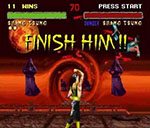

Ever since I was young, my mom has always been really into video games. And good at them, too. I remember watching her play Super Mario Bros on NES and she always told me that I helped her know what enemy was coming next because I knew the sounds they would make. We were a team. She also played some other cool games like Adventures of Lolo which is a really awesome puzzle game even someone at my young age could get into playing. It's probably one of the first video games I played myself.
I also remember we had this super novel thing called "the Sega channel", which was basically like Netflix for Sega games, but it was available in the '90s. It was great. My favorite game I played on that platform by far was this awesome game that had pixel art pictures of Russian landscapes in the background. It was kind of like a brick breaker game, I barely remember it. However, I do remember it had great music (not unlike Tetris) and have been searching for it ever since. I bet it didn't even get published.
Then, when we moved to Eugene, I finally met my mom's side of the family. I remember my cousin and I really getting into playing Tekken 2, Twisted Metal, and Mortal Kombat.  We even figured out how to get the gore on, unbeknownst to our parents, who probably wouldn't have been very happy to learn that we were playing with it on.
After I moved to my next house, we finally got a home computer. My grandpa hooked us up with an IBM and we started on DOS. There's still something so great about typing into a console and being able to make your computer do stuff. We played all sorts of "edutainment" games, and even had a horribly hard floppy disk version of this game called "Trolls" that had like 4 floppy disks you had to change between. I never got to the second one, though, cause that game was so hard. Oy.
One computer game got me into make websites. It was this silly little game called "Babyz", where you take care of virtual babies. Closely related to another similar game called "Petz". It was cute. There was a huge modding commnity online and I vaguely got into modding the clothes (through graphics) and just was overall inspired to make websites and have a web presense when I was around 12 years old. I created my first website on this horrible drag-and-drop platform called "Homestead" (apparently, still in business somehow) and found it's "tools" very lacking, so I decided to teach myself HTML at this website (that is still around) called LissaExplains.com. (Seriously, visit this website. It's embarrassing...)
When I made it to high school, I finally started making friends thanks to taking Japanese class and actually finding some people with similar interests to mine. My first real good friend from high school, Corey, invited me to play DDR one day. I was unsure, but we really got along doing our group project for Japanese class, so I decided to go.
After the first time I got on those dance pads, it was over. I would spend every free moment of my day with Corey and our group of friends at Park Lanes playing DDR and spent every penny of the chunk of change I made working my horrible after school job at DEB on 75 ¢ Joint Premium. Ah, those were the days.
My first song on "Heavy" was Ordinary World, which lead me to my greatest achievement of beating V (for EXTREME). It was such a difficult, beautiful song, and I'm still proud of beating it. ♪ Anytime it wasn't my turn, you could see me playing Soul Calibur II off to the side. It was the first time (and probably last) I made it onto a leaderboard; 4th place as Taki.
The more time I spent with my friends playing DDR, the more we decided to cross over into other fun games. We would usually end up over at Sean's house playing Super Smash Bros on the Gamecube. That game was fun, cause I wasd kind of good at it. Only because I would play as Peach, float around until the better players picked each other off, and then go head-to-head with the last man standing. It was a strategy, for sure.
I also remember this being around the time I decided I wasn't afraid of the horror genre of things (films, costumes, video games, etc). Sean had Silent Hill and I remember being so captivated watching him and my other friends taking turns playing that game. I even made a Silent Hill nurse costume myself.
That, and all the while still going to Park Lanes all the time to play DDR, lead to my first boyfriend getting his own hard pad and a computer with Stepmania, which was a knock off version of DDR that allows you to create your own songs and patterns and play all the already made ones from all of the games and arcade systems, even the ones in Japan! We would spend a lot of time at his house after most of us divided and went to our own separate colleges.
The last remnants of my time spent with my high school friends were the dreaded XBOX days, when everyone got really super into Halo. And I sucked at it. I couldn't get a handle on the two-way axis controls and completely lost interest, because if you're not at least a little good, then there's absolutely no point in playing.
After convincing myself that I was just dreadfully awful at all video games (damn you, Halo!), my interests swayed to other things. I began playing forum-based creative writing role-playing games about Harry Potter, got super into making graphics and pixel art, and generally spent most of my time going out dancing on Thursdays at this great dance party called "Plush".
I was working (very part-time) at Linda Hall Library, which generally meant being stuck waiting to direct phone calls to the right department in in absolutely silent reading room, browsing one of the forums I still frequent to this day and saw someone with a creeper signature. Immediately intrigued, it lead me to Minecraft and a few Let's Plays on YouTube that I greatly admired. It was still in beta, therefore "free", so I downloaded it and got really hooked.
I often spent many a day, stuck behind that desk, secretly playing Minecraft on the library's computer as no one called the phone, so it wasn't really that bad, right?
As I delved deeper into the YouTube Let's Play community, I ran across this super awesome looking pixel graphics game called "Papers, Please" which is basically a workplace simulation game set in a distopian authoritarian government where you have to make sure everyone's immigration papers check out. It's awesome. It was also my first forray into the world of Steam.
I had about three games until the first major sale where nearly everything on my wishlist went on SUPER MEGA SALE (this happens about 3 - 4 times a year, by the way) and thus began my computer game buying addiction complete and total conversion to PC gaming. My favorite Steam tags are "Pixel Graphics", "Great Soundtrack", "Atmospheric", "Space", "Simulation". I ♥ Steam. #notspons I've discovered some of my absolute favorite games on Steam and I will continue to play and replay them for as long as Steam is still a thing and I still have a working computer / fingers. My all-time favorites are (probably) Starbound, Stardew Valley, and FTL.
I also have Minecraft to thank for the awesome bond I've created with my nephews. For a long while, they were super shy around me and didn't really want to have anything to do with me (stupid adults, am I right?) Then, I told Lucas that I really loved playing Minecraft, and now I get to visit with them every other Friday at my parents house. We make zoos, and castles, and just generally have a good time blowing things up. His favorite mob is the piggy.
Most recently, my other nephew, Daniel, got my entire family addicted to this Roblox game called "Bee Swarm Simulator". I have no idea why, but it is so freaking addicting, and I'll often end up playing online with my parents (sometimes my sister, too) to wind down at the end of a long day full of doing "productive" things. I wonder what my next gaming obsession will be.
Due to my extreme connection with all of the various games throughout my life, I can only imagine that they will be a large part of my future as well. I would really like to use the skills I learn in LaunchCode to help me learn enough to make my own game. I already have quite a few ideas. I also can attribute and appreciate the interests and skills all of my video game adventures have awarded me, such as an extreme interest in pixel art, and 8-bit music, as well as the good friendships I've cultivated over the years. Games are awesome. Games are life. Keep playing.